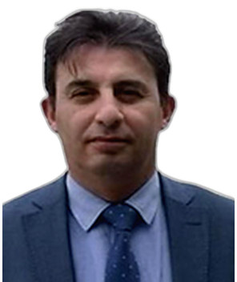

Profile
Mehmet Riza Heyet teaches in the Department of Contemporary Turkic Dialects and Literatures at Ankara University, a post dated from 2013. He has been the concession holder and editor-in-chief of the journal Varliq since 2015 and head of the Tabriz Research Institute (TEBAREN) since 2016. He received a doctorate at Ankara University in 2021 on Mirza Mehdi Khan Astarabadi’s Sanglakh, and a master’s degree there in 2005. His bachelor’s studies in Azerbaijani language and literature were at N. Tusi Pedagogical University in 1993–1995 and Baku State University in 1995–1998. Published selected books, articles, and talks on Iranian Turkic press, language, and identity.
Work experience
Tabriz Research Institute (TEBAREN)
2016–presentHead
Varliq journal
2015–presentConcession holder and editor-in-chief
Faculty of Languages, History and Geography, Ankara University, Ankara, Turkey
2013–presentInstructor
- Department of Contemporary Turkic Dialects and Literatures
TRT
2012–2013Translator and announcer
- South Azerbaijan (TRT Türki) desk
TRT
2008–2012Translator and announcer, Persian desk
Varliq journal
1995–2014Editor
University of Tehran and Rajaee University, Tehran
2001Teacher of Azerbaijani Turkish, part-official
Embassy of the Republic of Azerbaijan in Tehran
1999–2000Press translator
Varliq journal
1993–1995Executive director
Military service
1991–1993Tabriz Radio Research Center
1990–1991Researcher
Mahdi-Azadi newspaper
1990–1991Education
PhD
2021Contemporary Turkic dialects and literatures. Thesis: Mirzə Mehdi Xan Əstərabadinin Sənglax əsəri: Məbaniyül-lüğət və Kitabül-əlif
Institute of Social Sciences, Ankara University, Ankara, Turkey
Master’s degree
2005Contemporary Turkic dialects and literatures. Thesis: 19-cu əsrdən bu günə İranda türkcə mətbuat və nəşriyyat
Institute of Social Sciences, Ankara University, Ankara, Turkey
Bachelor’s degree
1993–1998Azerbaijani language and literature. N. Tusi Pedagogical University, 1993–1995; Baku State University, 1995–1998
Baku, Azerbaijan
Secondary school
1987–1990Tabriz
Middle school
1984–1987Tabriz
Primary school
1979–1984Tabriz
Teaching
- 2001 — Azerbaijani Turkish — University of Tehran and Rajaee University, Tehran
Publications
Books and textbooks
1. Heyət, M. R. (ed.). Erməni məzaliminin 100-cü ilində tarixi gerçəklər: Güney Azərbaycanda erməni məzalimi. TEBAREN, Ankara, 2018.
2. Heyət, M. R. (translator and foreword). Türk dilləri və ləhcələrinin tarixi. 2 volumes. Ministry of Culture and Tourism of the Republic of Azerbaijan, Baku, 2011.
3. Heyət, M. R. (ed.). Doktor Cavad Heyətin məqalələr toplusu. 4 volumes. Varliq, Tehran, 2006–2007.
4. Atatürk, Qazi Mustafa Kamal. Nitq. Translator: M. R. Heyət. Atatürk Research Center, Ankara, 2004.
5. Xəlil, Zeynal. Əsrim, talyim mənim. Selected poems. Editor: M. R. Heyət. Zufa, Tehran, 2000.
Peer-reviewed journal articles
1. Heyət, M. R. Mirzə Mehdi Xan Əstərabadi və onun Sənglax əsərində dil adlandırmaları üzərinə bir incələmə. Modern Türklük Araştırmaları Dergisi, 2019, vol. XVI, no. 2, pp. 380–389, Ankara.
2. Heyət, M. R. İki nəslin dərgisi Varlıq. Türk Yurdu, year 106, no. 354, 2017, Ankara.
3. Heyət, M. R. İranda dil məsələsi və anayasanın dəyişdirilməsinin zərurəti. Tribune Zamaneh, 2017. https://www.tribunezamaneh.com/archives/137718.
4. Heyət, M. R. Cavad Heyət. In: Azərbaycan Türklərinin öndərləri. Berikan, Ankara, 2017.
5. Heyət, M. R. Bilgəliyin çağdaş örnəyi Həmid Nitqi. Varlıq, 2016, no. 4, Ankara.
6. Heyət, M. R. Dr. Cavad Heyətin ictimai məsələlər haqqında görüşləri. Varlıq, 2016, nos. 5–6, Ankara.
7. Heyət, M. R. Ustad Kərim Məşrutəçi Sönməzdən yeni armağanlar. Varlıq, 2016, nos. 5–6, Ankara.
8. Heyət, M. R. Məşrutiyyət dönəmi türkcə mətbuat və nəşriyyat. Varlıq, winter 2015, no. 3, Ankara.
9. Heyət, M. R. Varlıq Dergisi. Türkiye Diyanet Vakfı İslam Ansiklopedisi, vol. 42, pp. 523–524. TDV İslam Araştırmaları Merkezi, Istanbul, 2012.
10. Heyət, M. R. Fereydan ağzı. Modern Türklük Araştırmaları Dergisi, December 2012, vol. 9, no. 4.
11. Heyət, M. R. 19-cu əsrdə türklərin ictimai-mədəni durumu. Varlıq, 2007, no. 143, Tehran.
12. Heyət, M. R. İranda Azərbaycan türkcəsinin standartlaşma prosesi. Varlıq, 2007, no. 145, pp. 27–42, Tehran.
13. Heyət, M. R. İran türklərində kimlik məsələsi. Bilig, summer 2004, no. 30, Ankara.
14. Heyət, M. R. Türkcənin etimoloji sözlükləri. Varlıq, 2003, no. 128-1, Tehran.
15. Heyət, M. R. Güney Azərbaycan türklərinin sosial-mədəni fəaliyyətləri. 2023, 2003, no. 27, Ankara.
16. Heyət, M. R. Nizami Gəncəvinin həyatı və əsərləri. Füruği-Azadi, special issue, 2001, Tabriz.
17. Heyət, M. R. Cavad Heyətin əsərlərinin biblioqrafiyası. In: Bıçaq və qələm. Təhsil, Baku, 2000.
18. Heyət, M. R. Prof. Dr. Həmid Nitqinin Varlıqdakı yaradıcılığı. Varlıq, 1999, nos. 113-2, Tehran.
19. Heyət, M. R. Mətbuatda Həmid Nitqi. Varlıq, 1999, nos. 113-2, Tehran.
20. Heyət, M. R. Türklərdə Novruz bayramı. Mobin, special issue, 15 March 1998, Tehran.
21. Heyət, M. R. Cavad Heyətin əsərlərinin biblioqrafiyası. In: Dr. Cavad Heyət. Azərbaycan nəşriyyatı, Baku, 1995.
Conference papers and abstracts
1. Heyət, M. R. Türk milli birliyinin gerçəkləşməsində Güney Azərbaycan türklərinin yeri və önəmi. II International National Unity and Solidarity Symposium, İLESAM and the Ministry of Culture, Ankara, 22 March 2018.
2. Heyət, M. R. Cümhuriyyət öncəsi və sonrası İran ziyalılarının Məhəmməd Əmin Rəsulzadəyə baxışı. Symposium on Contemporary Turkic Studies, Ankara University, May 2018.
3. Heyət, M. R. Qiymətli ustadım mərhum Dr. C. Eralp Alışık. Symposium on Readings in Turkish Language and Culture, Yeditepe University, Istanbul, 3 May 2018.
4. Heyət, M. R. İranda türklər. International Congress of Turkic Culture, Balıkesir University, Burhaniye, 5–8 September 2018.
5. Heyət, M. R. Türkiyədə yaşayan iranlı sığınmacıların dil durumu. Symposium on Contemporary Turkic Studies, Ankara University, October 2017.
6. Heyət, M. R. Klassik fars ədəbiyyatında türk imici. Symposium on Contemporary Turkic Studies, Ankara University, November 2013.
7. Heyət, M. R. Tehran türklərində kimlik məsələsi. 1st Turkology Day, Ankara University, May 2011.
8. Heyət, M. R. Mirzə Mehdi Xan Əstərabadinin Məbaniyül-lüğət əsərində dil adlandırmaları. Symposium on Iranian Turkology, Ankara University, June 2010.
9. Heyət, M. R. İranda Azərbaycan və Xorasan türk dialektləri arasında bir şivə: Fereydan şivəsi. Symposium on Contemporary Turkic Studies, Ankara University, June 2008.
10. Heyət, M. R. Azərbaycan sahəsinin ən əski türkcə lüğəti: Sıhah-ul-əcəm. ICANAS, Atatürk Supreme Council for Culture, Language and History, Ankara, September 2007.
11. Heyət, M. R. İranda türkcənin standartlaşma prosesi. II International Congress of the Great Turkic Language, Bilkent University, Ankara, September 2007.
12. Heyət, M. R. İranda Məşrutiyyət dövrünə aid türkcə yazılı materiallar. First Congress of the Great Turkic Language, Bilkent University, Ankara, September 2006.
13. Heyət, M. R. Xələcistan notları. 5th Symposium on Contemporary Turkic Studies, Ankara University, May 2006.